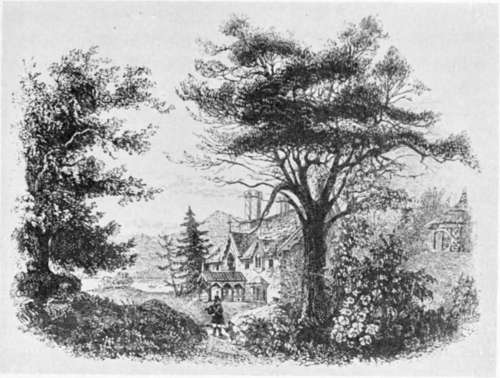

Beauties And Principles Of The Art. Part 2
Description
This section is from the book "Landscape Gardening", by Andrew Jackson Downing. Also available from Amazon: Landscape Gardening.
Beauties And Principles Of The Art. Part 2
To the lover of the fine arts, the name of Claude Lorraine cannot fail to suggest examples of beauty in some of its purest and most simple forms. In the best pictures of this master we see portrayed those graceful and flowing forms in trees, foreground, and buildings, which delight so much the lover of noble and chaste beauty, — compositions emanating from a harmonious soul, and inspired by a climate and a richness of nature and art seldom surpassed.
On the other hand, where shall we find all the elements of the picturesque more graphically combined than in the vigorous landscapes of Salvator Rosa! In those rugged scenes, even the lawless aspects of his favorite robbers and banditti are not more spirited, than the bold rocks and wild passes by which they are surrounded. And in the produclions of his pencil we see the influence of a romantic and vigorous imagination, nursed amid scenes teeming with the grand as well as the picturesque - - both of which he embodies in the most striking manner.
Fig. 6. The Picturesque as Illustrated by Mr. Downing.
In giving these illustrations of beautiful and of picturesque scenes, we have not intended them to be understood in the light of exact models for imitation in Landscape Gardening — only as striking examples of expression in natural scenery. Although in nature many landscapes partake in a certain degree of both these kinds of expression, yet it is no doubt true that the effect is more satisfactory, where either the one or the other character predominates. The accomplished amateur should be able to seize at once upon the characteristics of these two species of beauty in all scenery. To assist the reader in this kind of discrimination, we shall keep these expressions constantly in view, and we hope we shall be able fully to illustrate the difference in the expression of even single trees, in this respect. A few strongly marked objects, either picturesque or simply beautiful, will often confer their character upon a whole landscape; as the destruction of a single group of bold rocks, covered with wood, may render a scene, once picturesque, completely insipid.
The early writers on the modern style were content with trees allowed to grow in their natural forms, and with an easy assemblage of sylvan scenery in the pleasure-grounds, which resembled the usual woodland features of nature. The effect of this method will always be interesting, and an agreeable impression will always be the result of following the simplest hints derived from the free and luxuriant forms of nature. No residence in the country can fail to be pleasing, whose features are natural groups of forest trees, smooth lawn, and hard gravel walks.
But this is scarcely Landscape Gardening in the true sense of the word, although apparently so understood by many writers. By Landscape Gardening, we understand not only an imitation, in the grounds of a country residence, of the agreeable forms of nature, but an expressive, harmonious, and refined imitation. In Landscape Gardening, we should aim to separate the accidental and extraneous in nature, and to preserve only the spirit, or essence. This subtle essence lies, we believe, in the expression more or less pervading every attractive portion of nature. And it is by eliciting, preserving, or heightening this expression, that we may give our landscape gardens a higher charm, than even the polish of art can bestow.
Now, the two most forcible and complete expressions to be found in that kind of natural scenery which may be reproduced in Landscape Gardening, are the Beautiful and the Picturesque. As we look upon these as quite distinct, and as success in practical embellishment must depend on our feeling and understanding these expressions beforehand, it is necessary that we should attach some definite meaning to terms which we shall be continually obliged to employ. This is, indeed, the more requisite, from the vague and conflicting opinions of most preceding writers on this branch of the subject; some, like Repton, insisting that they are identical; and others, like Price, that they are widely different.
Gilpin defines Picturesque objects to be " those which please from some quality capable of being illustrated in painting".
Nothing can well be more vague than such a definition. We have already described the difference between the beautiful landscapes of Claude and the picturesque scenes painted by Salvator. No one can deny their being essentially distinct in character; and no one, we imagine, will deny that they both please from " some quality capable of being illustrated in painting." The beautiful female heads of Carlo Dolce are widely different from those of the picturesque peasant girls of Gerard Douw, yet both are favorite subjects with artists. A symmetrical American elm, with its wide head drooping with garlands of graceful foliage, is very different in expression from the wild and twisted larch or pine tree, which we find on the steep sides of a mountain; yet both are favorite subjects with the painter. It is clear, indeed, that there is a widely different idea hidden under these two distinct types, in material forms.
Beauty, in all natural objects, as we conceive, arises from their expression of those attributes of the Creator — infinity, unity, symmetry, proportion, etc. — which he has stamped more or less visibly on all his works; and a beautiful living form is one in which the individual is a harmonious and well balanced development of a fine type. Thus, taking the most perfect specimens of beauty in the human figure, we see in them symmetry, proportion, unity, and grace — the presence of everything that could add to the idea of perfected existence. In a beautiful tree, such as a fine American elm, we see also the most complete and perfect balance of all its parts, resulting from its growth under the most favorable influences. It realizes, then, perfectly, the finest form of a fine type or species of tree.
Continue to:
- prev: Chapter II. Beauties And Principles Of The Art
- Table of Contents
- next: Beauties And Principles Of The Art. Part 3